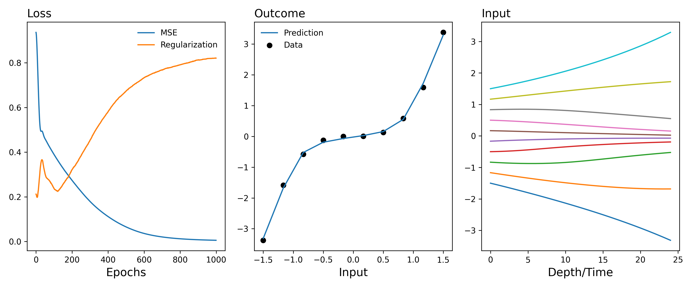
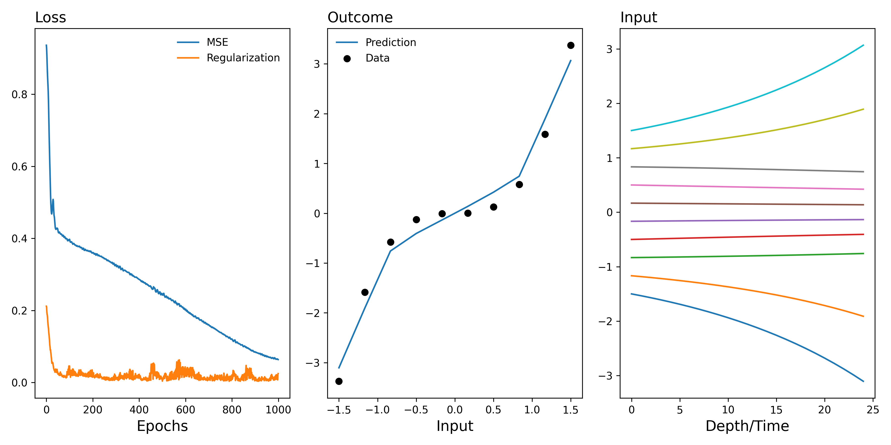

Deep controls
Overview
We're going to estimate linear models via fitting non-linear models
How do we "evolve" the partially linear model towards a non-parametric model?
What's In Between?
- "De-meaning the estimates" as in a partially linear model
- Reweighting observations as in a fully nonparametric model
Regression Framework
- You can think of the regression framework as averaging across \(n\) randomized controls trials centered on \(x\) with one observation in each trial with no correction/adjustment for the conditional distribution: \(\mathbb{P}(D|X)\)
where
- \(v_i = y_i - f_1(x_i)\)
- \(u_i= d_i - f_2(x_i)\)
- \(f_1(x_i) = E[Y|X=x]\)
- \(f_2(x_i) = E[D|X=x]\)
Causal Inference
- Statistical Learning Theory: "If it turns out that nevertheless we can explain the data at hand, then we have reason to believe that we have found a regularity underlying the data."
Our Gradient Correction Approach
We incorporate the regularizing strategy proposed in Learning Differential Equations that are Easy to Solve
 
Abstract Algebra
- Sets
- Group (functions defined on this set)
What structure on \(\mathbb{R}^n\) should we preserve?
We don't assume cross-sectional selection on observables:
We assume de-panelled selection1 on observables:
This assumption provides justification for interpreting \(\beta_1\) as the causal effect:
In practice, we don't usually condition on \(X_i\) (which means there's no reason to correct for \(\mathbb{P}(D|X)\), and this is very attractive because we know that the partially linear model fails to correct for this! --> See Double Machine Learning Example) and we allow
But in some sense, this kinda feels like cheating because it suggests that de-panelled selection on observables is easier to work with than cross-sectional selection on observables.
-
Repeated cross-section ↩